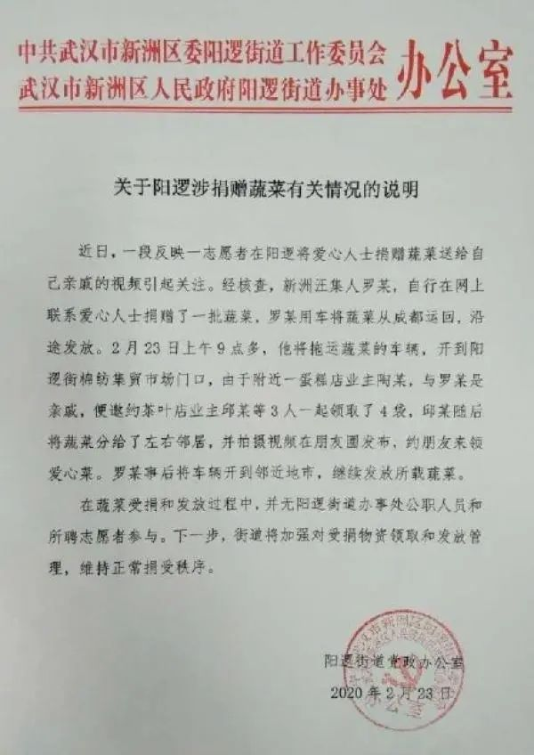

违规分配捐赠物资 鄂州鄂城区多人被查
原文链接 备份链接 【财新网】（记者 周泰来 实习记者 陈丽金）湖北鄂州市一派出所违规分配和领取捐赠生活物资导致多人被查。2月22日，鄂州市政府官网通报，日前鄂州市纪委监委、市公安局对网络反映的鄂州市公安局鄂城区分局凤凰派出所违规分配和领 …
武汉发布微博
武汉发布微博2月23日发布《关于阳逻涉捐赠蔬菜有关情况的说明》，内容如下：

近日，一段反映一志愿者在阳逻将爱心人士捐赠蔬菜送给自己亲戚的视频引起关注。经核查，新洲汪集人罗某，自行在网上联系爱心人士捐赠了一批蔬菜，罗某用车将蔬菜从成都运回，沿途发放。2月23日上午9点多，他将拖运蔬菜的车辆，开到阳逻街棉纺集贸市场门口，由于附近一蛋糕店业主陶某，与罗某是亲戚，便邀约茶叶店业主邱某等3人一起领取了4袋，邱某随后将蔬菜分给了左右邻居，并拍摄视频在朋友圈发布，约朋友来领爱心菜。罗某事后将车辆开到邻近地市，继续发放所载蔬菜。
在蔬菜受捐和发放过程中，并无阳逻街道办事处公职人员和所聘志愿者参与。下一步，街道将加强对受捐物资领取和发放管理，维持正常捐受秩序。

本期编辑 常琛
推荐阅读


原文链接 备份链接 【财新网】（记者 周泰来 实习记者 陈丽金）湖北鄂州市一派出所违规分配和领取捐赠生活物资导致多人被查。2月22日，鄂州市政府官网通报，日前鄂州市纪委监委、市公安局对网络反映的鄂州市公安局鄂城区分局凤凰派出所违规分配和领 …
原文链接 备份链接 距离武汉封城已有28天，全国各地物资不断涌向武汉等疫情中心城市，但仍有当地医院持续高呼“急缺物资”。所有人心存疑惑：物资都去哪了？ 作为指定防疫募捐物资接收的机构，武汉等地红十字会数次成为了舆论质疑焦点。就此，AI前哨 …
原文链接 备份链接 世上没有从天而降的英雄，只有挺身而出的凡人。 李文亮医生走了。 2020年2月7日凌晨3点48分，武汉市中心医院微博发布消息：我院眼科医生李文亮，在抗击新型冠状病毒感染的肺炎疫情工作中不幸感染，经全力抢救无效， …
原文链接 备份链接 澎湃新闻记者 杨喆 实习生 陈思旭 2月15日下午2点30分，申波终于走出了湖北省黄石市传染病医院。去武汉参加公司年底聚餐时他不幸感染了新冠肺炎，1月23日被确诊，此后他在医院里共住了23天。 这23天，申波觉得自己像 …
原文链接 备份链接 今天是2月23日，整整一个月了，在春节前的1月23日，武汉宣布封城。 这是人生中最漫长的一个月，因为每天都有各种各样的信息，排山倒海一样劈面而来，有一段时间，真正体会到了什么叫度日如年。这也是人生中最仓促的一个月，好像 …